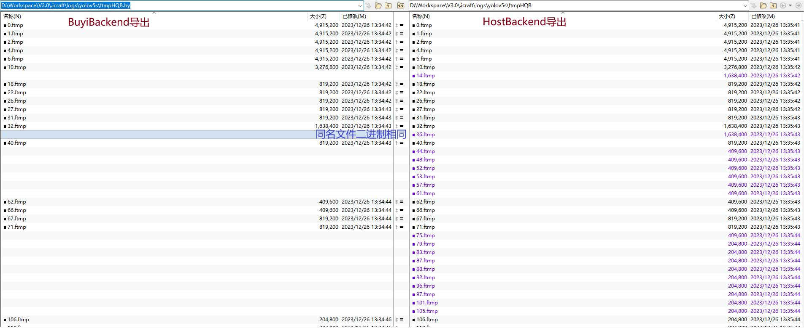
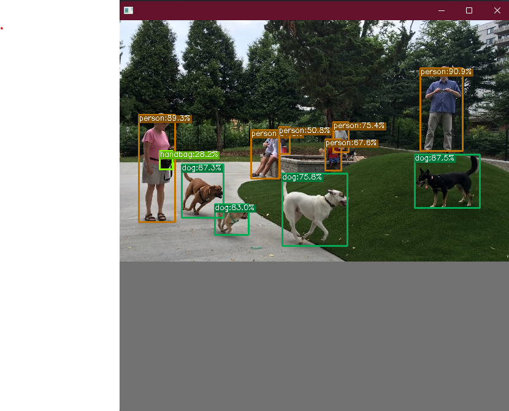

运行#

智能计算平台中的硬件平台是FPAI的架构，其包含CPU、GPU、NPU和PL等计算资源。不同的计算资源对应着不同的后端。如上图所示，Icraft支持编译产生的任意阶段的中间层网络在不同的后端上运行。Icraft使用后端来表示不同的计算资源，不同的后端能够支持的算子类型和属性不同，当前实现的后端有 HostBackend 和 BuyiBackend ：
HostBackend对应着x86 CPU和Arm CPU等计算资源，其中x86 CPU支持所有的内置算子，Arm CPU仅支持add、align_axis、cast、input、multiply、output、prune_axis、reorg、reshape、resize、swap_order、yolo、region13个算子。
；
* BuyiBackend 对应着NPU和PL等计算资源， 只支持 HardOp 和 Cast 等利用NPU完成前向的算子。
Icraft提供了CLI和API两种方式来完成中间层网络在不同后端上的运行。
一 命令行接口#
Icraft提供了 run 命令来在指定的后端上运行一个中间层网络，和编译命令类似，该命令用法如下：
icraft run [<config file>] [--<key> <value>]
仍以 yolov5s 作为示例，我们在配置文件中添加 run 命令的配置项：
yolov5s.toml
1[run]
2json = "json&raw/yolov5s_BY.json"
3raw = "json&raw/yolov5s_BY.raw"
4input = "./images/test/test_640x640.jpg"
5backends = "BY,socket://ql100aiu@192.168.125.148:9981;Host"
6dump_format = "HQB"
7log_io = true
以上配置各参数的意义如下：
json: 网络的JSON文件，此处配置的是yolov5s指令生成后的中间层文件
raw: 网络的RAW文件，和JSON文件要对应
input: 网络前向的输入，此处配置了一张测试图片
backends: 指定网络前向的后端，此处配置优先在在BuyiBackend上运行(设备的URL为
socket://ql100aiu@192.168.125.148:9981)，BuyiBackend不支持的算子，则在HostBackend上运行dump_format: 导出网络每一个算子的运算结果，支持的格式由三个字母表示：
第一个字母表示排布，H表示硬件，S表示软件
第二个字母表示数值，F表示浮点，Q表示定点
第三个字母表示序列化形式，B表示二进制，T表示文本
备注
若一个Tensor原本的排布时H，那么可以转为S；若原本的数值为Q，那么可以转为F；
反之，如果原本的排布为S，即使指定了导出格式为H，那么依然会导出S排布的数据；如果原本的数值为F，即使指定了导出格式为Q，那么依然会导出浮点数值。
log_io: 记录每一个算子的输入输出信息
执行 icraft run ./configs/yolov5s.toml , 其结果如下：
icraft run ./configs/yolov5s.toml
1[2023-12-26 13:34:41.461] [info] Device initialization successful, version information:
2[2023-12-26 13:34:41.644] [info] icore: FMSHBYV1-20200903
3[2023-12-26 13:34:41.644] [info] device: 101844d2
4[2023-12-26 13:34:41.644] [info] Device Protocol: socket
5[2023-12-26 13:34:41.644] [info] Device Name: ql100aiu
6[2023-12-26 13:34:41.645] [info] Device Parameters:
7Run [██████████████████████████████████████████████████ ] 100% [00m:11s] Done!
8
9[12/26/23 13:34:53.178] [I] network wall: 0.0064 ms
10[12/26/23 13:34:53.178] [I] opId: 0 opType: Input Inputs: Outputs: (-1,-1,-1,-1)
11[12/26/23 13:34:53.178] [I] opId: 1 opType: Resize Inputs: (-1,-1,-1,-1) Outputs: (1,640,640,3)
12[12/26/23 13:34:53.179] [I] opId: 2 opType: SwapOrder Inputs: (1,640,640,3) Outputs: (1,640,640,3)
13[12/26/23 13:34:53.179] [I] opId: 3 opType: Add Inputs: (1,640,640,3)+(1,1,1,3) Outputs: (1,640,640,3)
14[12/26/23 13:34:53.179] [I] opId: 4 opType: Multiply Inputs: (1,640,640,3)+(1,1,1,3) Outputs: (1,640,640,3)
15[12/26/23 13:34:53.179] [I] opId: 295 opType: AlignAxis Inputs: (1,640,640,3) Outputs: (1,640,640,4)
16[12/26/23 13:34:53.179] [I] opId: 296 opType: Cast Inputs: (1,640,640,4) Outputs: (1,1,640,640,4)
17[12/26/23 13:34:53.179] [I] opId: 459 opType: HardOp Inputs: (1,1,640,640,4) Outputs: (1,1,320,320,32)
18[12/26/23 13:34:53.179] [I] opId: 460 opType: HardOp Inputs: (1,1,320,320,32) Outputs: (1,2,160,160,32)
19[12/26/23 13:34:53.179] [I] opId: 461 opType: HardOp Inputs: (1,2,160,160,32) Outputs: (1,1,160,160,32)
20[12/26/23 13:34:53.180] [I] opId: 462 opType: HardOp Inputs: (1,1,160,160,32) Outputs: (1,1,160,160,32)
21[12/26/23 13:34:53.180] [I] opId: 463 opType: HardOp Inputs: (1,1,160,160,32) Outputs: (1,1,160,160,32)
22[12/26/23 13:34:53.180] [I] opId: 519 opType: HardOp Inputs: (1,1,160,160,32)+(1,1,160,160,32) Outputs: (1,1,160,160,32)
23[12/26/23 13:34:53.180] [I] opId: 464 opType: HardOp Inputs: (1,2,160,160,32) Outputs: (1,1,160,160,32)
24[12/26/23 13:34:53.180] [I] opId: 446 opType: HardOp Inputs: (1,1,160,160,32)+(1,1,160,160,32) Outputs: (1,2,160,160,32)
25[12/26/23 13:34:53.180] [I] opId: 465 opType: HardOp Inputs: (1,2,160,160,32) Outputs: (1,2,160,160,32)
26[12/26/23 13:34:53.180] [I] opId: 466 opType: HardOp Inputs: (1,2,160,160,32) Outputs: (1,4,80,80,32)
27[12/26/23 13:34:53.180] [I] opId: 467 opType: HardOp Inputs: (1,4,80,80,32) Outputs: (1,2,80,80,32)
28[12/26/23 13:34:53.180] [I] opId: 468 opType: HardOp Inputs: (1,2,80,80,32) Outputs: (1,2,80,80,32)
29[12/26/23 13:34:53.180] [I] opId: 469 opType: HardOp Inputs: (1,2,80,80,32) Outputs: (1,2,80,80,32)
30[12/26/23 13:34:53.181] [I] opId: 520 opType: HardOp Inputs: (1,2,80,80,32)+(1,2,80,80,32) Outputs: (1,2,80,80,32)
31[12/26/23 13:34:53.181] [I] opId: 470 opType: HardOp Inputs: (1,2,80,80,32) Outputs: (1,2,80,80,32)
32[12/26/23 13:34:53.181] [I] opId: 471 opType: HardOp Inputs: (1,2,80,80,32) Outputs: (1,2,80,80,32)
33[12/26/23 13:34:53.181] [I] opId: 521 opType: HardOp Inputs: (1,2,80,80,32)+(1,2,80,80,32) Outputs: (1,2,80,80,32)
34[12/26/23 13:34:53.181] [I] opId: 472 opType: HardOp Inputs: (1,4,80,80,32) Outputs: (1,2,80,80,32)
35[12/26/23 13:34:53.181] [I] opId: 447 opType: HardOp Inputs: (1,2,80,80,32)+(1,2,80,80,32) Outputs: (1,4,80,80,32)
36[12/26/23 13:34:53.181] [I] opId: 473 opType: HardOp Inputs: (1,4,80,80,32) Outputs: (1,4,80,80,32)
37[12/26/23 13:34:53.181] [I] opId: 474 opType: HardOp Inputs: (1,4,80,80,32) Outputs: (1,8,40,40,32)
38[12/26/23 13:34:53.181] [I] opId: 475 opType: HardOp Inputs: (1,8,40,40,32) Outputs: (1,4,40,40,32)
39[12/26/23 13:34:53.182] [I] opId: 476 opType: HardOp Inputs: (1,4,40,40,32) Outputs: (1,4,40,40,32)
40[12/26/23 13:34:53.182] [I] opId: 477 opType: HardOp Inputs: (1,4,40,40,32) Outputs: (1,4,40,40,32)
41[12/26/23 13:34:53.182] [I] opId: 522 opType: HardOp Inputs: (1,4,40,40,32)+(1,4,40,40,32) Outputs: (1,4,40,40,32)
42[12/26/23 13:34:53.182] [I] opId: 478 opType: HardOp Inputs: (1,4,40,40,32) Outputs: (1,4,40,40,32)
43[12/26/23 13:34:53.182] [I] opId: 479 opType: HardOp Inputs: (1,4,40,40,32) Outputs: (1,4,40,40,32)
44[12/26/23 13:34:53.182] [I] opId: 523 opType: HardOp Inputs: (1,4,40,40,32)+(1,4,40,40,32) Outputs: (1,4,40,40,32)
45[12/26/23 13:34:53.182] [I] opId: 480 opType: HardOp Inputs: (1,4,40,40,32) Outputs: (1,4,40,40,32)
46[12/26/23 13:34:53.182] [I] opId: 481 opType: HardOp Inputs: (1,4,40,40,32) Outputs: (1,4,40,40,32)
47[12/26/23 13:34:53.182] [I] opId: 524 opType: HardOp Inputs: (1,4,40,40,32)+(1,4,40,40,32) Outputs: (1,4,40,40,32)
48[12/26/23 13:34:53.182] [I] opId: 482 opType: HardOp Inputs: (1,8,40,40,32) Outputs: (1,4,40,40,32)
49[12/26/23 13:34:53.183] [I] opId: 448 opType: HardOp Inputs: (1,4,40,40,32)+(1,4,40,40,32) Outputs: (1,8,40,40,32)
50[12/26/23 13:34:53.183] [I] opId: 483 opType: HardOp Inputs: (1,8,40,40,32) Outputs: (1,8,40,40,32)
51[12/26/23 13:34:53.183] [I] opId: 484 opType: HardOp Inputs: (1,8,40,40,32) Outputs: (1,16,20,20,32)
52[12/26/23 13:34:53.183] [I] opId: 485 opType: HardOp Inputs: (1,16,20,20,32) Outputs: (1,8,20,20,32)
53[12/26/23 13:34:53.183] [I] opId: 486 opType: HardOp Inputs: (1,8,20,20,32) Outputs: (1,8,20,20,32)
54[12/26/23 13:34:53.183] [I] opId: 487 opType: HardOp Inputs: (1,8,20,20,32) Outputs: (1,8,20,20,32)
55[12/26/23 13:34:53.183] [I] opId: 525 opType: HardOp Inputs: (1,8,20,20,32)+(1,8,20,20,32) Outputs: (1,8,20,20,32)
56[12/26/23 13:34:53.183] [I] opId: 488 opType: HardOp Inputs: (1,16,20,20,32) Outputs: (1,8,20,20,32)
57[12/26/23 13:34:53.183] [I] opId: 449 opType: HardOp Inputs: (1,8,20,20,32)+(1,8,20,20,32) Outputs: (1,16,20,20,32)
58[12/26/23 13:34:53.183] [I] opId: 489 opType: HardOp Inputs: (1,16,20,20,32) Outputs: (1,16,20,20,32)
59[12/26/23 13:34:53.184] [I] opId: 490 opType: HardOp Inputs: (1,16,20,20,32) Outputs: (1,8,20,20,32)
60[12/26/23 13:34:53.184] [I] opId: 526 opType: HardOp Inputs: (1,8,20,20,32) Outputs: (1,8,20,20,32)
61[12/26/23 13:34:53.184] [I] opId: 527 opType: HardOp Inputs: (1,8,20,20,32) Outputs: (1,8,20,20,32)
62[12/26/23 13:34:53.184] [I] opId: 528 opType: HardOp Inputs: (1,8,20,20,32) Outputs: (1,8,20,20,32)
63[12/26/23 13:34:53.184] [I] opId: 450 opType: HardOp Inputs: (1,8,20,20,32)+(1,8,20,20,32)+(1,8,20,20,32)+(1,8,20,20,32) Outputs: (1,32,20,20,32)
64[12/26/23 13:34:53.184] [I] opId: 491 opType: HardOp Inputs: (1,32,20,20,32) Outputs: (1,16,20,20,32)
65[12/26/23 13:34:53.184] [I] opId: 492 opType: HardOp Inputs: (1,16,20,20,32) Outputs: (1,8,20,20,32)
66[12/26/23 13:34:53.184] [I] opId: 529 opType: HardOp Inputs: (1,8,20,20,32) Outputs: (1,8,40,40,32)
67[12/26/23 13:34:53.184] [I] opId: 451 opType: HardOp Inputs: (1,8,40,40,32)+(1,8,40,40,32) Outputs: (1,16,40,40,32)
68[12/26/23 13:34:53.185] [I] opId: 493 opType: HardOp Inputs: (1,16,40,40,32) Outputs: (1,4,40,40,32)
69[12/26/23 13:34:53.185] [I] opId: 494 opType: HardOp Inputs: (1,4,40,40,32) Outputs: (1,4,40,40,32)
70[12/26/23 13:34:53.185] [I] opId: 495 opType: HardOp Inputs: (1,4,40,40,32) Outputs: (1,4,40,40,32)
71[12/26/23 13:34:53.185] [I] opId: 496 opType: HardOp Inputs: (1,16,40,40,32) Outputs: (1,4,40,40,32)
72[12/26/23 13:34:53.185] [I] opId: 452 opType: HardOp Inputs: (1,4,40,40,32)+(1,4,40,40,32) Outputs: (1,8,40,40,32)
73[12/26/23 13:34:53.185] [I] opId: 497 opType: HardOp Inputs: (1,8,40,40,32) Outputs: (1,8,40,40,32)
74[12/26/23 13:34:53.185] [I] opId: 498 opType: HardOp Inputs: (1,8,40,40,32) Outputs: (1,4,40,40,32)
75[12/26/23 13:34:53.185] [I] opId: 530 opType: HardOp Inputs: (1,4,40,40,32) Outputs: (1,4,80,80,32)
76[12/26/23 13:34:53.185] [I] opId: 453 opType: HardOp Inputs: (1,4,80,80,32)+(1,4,80,80,32) Outputs: (1,8,80,80,32)
77[12/26/23 13:34:53.185] [I] opId: 499 opType: HardOp Inputs: (1,8,80,80,32) Outputs: (1,2,80,80,32)
78[12/26/23 13:34:53.186] [I] opId: 500 opType: HardOp Inputs: (1,2,80,80,32) Outputs: (1,2,80,80,32)
79[12/26/23 13:34:53.186] [I] opId: 501 opType: HardOp Inputs: (1,2,80,80,32) Outputs: (1,2,80,80,32)
80[12/26/23 13:34:53.186] [I] opId: 502 opType: HardOp Inputs: (1,8,80,80,32) Outputs: (1,2,80,80,32)
81[12/26/23 13:34:53.186] [I] opId: 454 opType: HardOp Inputs: (1,2,80,80,32)+(1,2,80,80,32) Outputs: (1,4,80,80,32)
82[12/26/23 13:34:53.186] [I] opId: 503 opType: HardOp Inputs: (1,4,80,80,32) Outputs: (1,4,80,80,32)
83[12/26/23 13:34:53.186] [I] opId: 504 opType: HardOp Inputs: (1,4,80,80,32) Outputs: (1,4,40,40,32)
84[12/26/23 13:34:53.186] [I] opId: 455 opType: HardOp Inputs: (1,4,40,40,32)+(1,4,40,40,32) Outputs: (1,8,40,40,32)
85[12/26/23 13:34:53.186] [I] opId: 505 opType: HardOp Inputs: (1,8,40,40,32) Outputs: (1,4,40,40,32)
86[12/26/23 13:34:53.186] [I] opId: 506 opType: HardOp Inputs: (1,4,40,40,32) Outputs: (1,4,40,40,32)
87[12/26/23 13:34:53.186] [I] opId: 507 opType: HardOp Inputs: (1,4,40,40,32) Outputs: (1,4,40,40,32)
88[12/26/23 13:34:53.187] [I] opId: 508 opType: HardOp Inputs: (1,8,40,40,32) Outputs: (1,4,40,40,32)
89[12/26/23 13:34:53.187] [I] opId: 456 opType: HardOp Inputs: (1,4,40,40,32)+(1,4,40,40,32) Outputs: (1,8,40,40,32)
90[12/26/23 13:34:53.187] [I] opId: 509 opType: HardOp Inputs: (1,8,40,40,32) Outputs: (1,8,40,40,32)
91[12/26/23 13:34:53.187] [I] opId: 510 opType: HardOp Inputs: (1,8,40,40,32) Outputs: (1,8,20,20,32)
92[12/26/23 13:34:53.187] [I] opId: 457 opType: HardOp Inputs: (1,8,20,20,32)+(1,8,20,20,32) Outputs: (1,16,20,20,32)
93[12/26/23 13:34:53.187] [I] opId: 511 opType: HardOp Inputs: (1,16,20,20,32) Outputs: (1,8,20,20,32)
94[12/26/23 13:34:53.187] [I] opId: 512 opType: HardOp Inputs: (1,8,20,20,32) Outputs: (1,8,20,20,32)
95[12/26/23 13:34:53.187] [I] opId: 513 opType: HardOp Inputs: (1,8,20,20,32) Outputs: (1,8,20,20,32)
96[12/26/23 13:34:53.187] [I] opId: 514 opType: HardOp Inputs: (1,16,20,20,32) Outputs: (1,8,20,20,32)
97[12/26/23 13:34:53.188] [I] opId: 458 opType: HardOp Inputs: (1,8,20,20,32)+(1,8,20,20,32) Outputs: (1,16,20,20,32)
98[12/26/23 13:34:53.188] [I] opId: 515 opType: HardOp Inputs: (1,16,20,20,32) Outputs: (1,16,20,20,32)
99[12/26/23 13:34:53.188] [I] opId: 516 opType: HardOp Inputs: (1,4,80,80,32) Outputs: (1,8,80,80,32)
100[12/26/23 13:34:53.188] [I] opId: 517 opType: HardOp Inputs: (1,8,40,40,32) Outputs: (1,8,40,40,32)
101[12/26/23 13:34:53.188] [I] opId: 518 opType: HardOp Inputs: (1,16,20,20,32) Outputs: (1,8,20,20,32)
102[12/26/23 13:34:53.188] [I] opId: 439 opType: Cast Inputs: (1,8,80,80,32) Outputs: (1,80,80,256)
103[12/26/23 13:34:53.188] [I] opId: 440 opType: PruneAxis Inputs: (1,80,80,256) Outputs: (1,80,80,255)
104[12/26/23 13:34:53.188] [I] opId: 441 opType: Cast Inputs: (1,8,40,40,32) Outputs: (1,40,40,256)
105[12/26/23 13:34:53.188] [I] opId: 442 opType: PruneAxis Inputs: (1,40,40,256) Outputs: (1,40,40,255)
106[12/26/23 13:34:53.189] [I] opId: 443 opType: Cast Inputs: (1,8,20,20,32) Outputs: (1,20,20,256)
107[12/26/23 13:34:53.189] [I] opId: 444 opType: PruneAxis Inputs: (1,20,20,256) Outputs: (1,20,20,255)
108[12/26/23 13:34:53.189] [I] opId: 147 opType: Output Inputs: (1,80,80,255)+(1,40,40,255)+(1,20,20,255) Outputs:
109
110[irpc::port::client::tcp::deinit] socket fd closed
icraft run 首先会打印设备信息，然后执行网络的前向，打印进度条，最后打印每一层的IO信息，同时还会在 .icraft/logs/yolov5s/ftmpHQB 下保存每一个算子的输出特征图。
以上配置实现了在 BuyiBackend 上使用NPU来运行指令生成后的网络。除了 BuyiBackend 外， HostBackend 也能运行指令生成后的网络，即使用CPU对生成的NPU指令进行仿真。我们可以使用命令行来覆盖配置文件中的backends参数，以实现将以上网络在 HostBackend 上运行。
icraft run .\configs\yolov5s.toml --backends Host
以上命令也会在 .icraft/logs/yolov5s/ftmpHQB 下保存每一层的输出特征图，我们可以对比两次保存的特征图来检验运行结果是否正确。
备注
对于指令生成后的网络， 当在 BuyiBackend 上运行时，会对中间层的特征图进行OCM (片上存储) 优化，而被优化的中间层特征图不会被导出。因此在 BuyiBackend 导出的中间层特征图数量有可能会比 HostBackend 导出的少。
在对比两次的结果时，只需要保证同名文件二进制相同即可。

二 API#
Icarft-XRT提供了丰富的API接口（包括C++和Python）来帮助用户将编译生成的网络在指定的后端上运行。我们仍以指令生成后的yolov5s的中间层文件为例，分别使用C++ API和Python API将其在指定的后端上运行起来。
2.1 C++ API#
Icraft支持并建议使用CMake来构建C++工程，以方便地依赖Icraft提供的各种库文件。比如我们新建一个文件夹 code ，然后在该文件夹中新建 CMakeLists.txt 文件，其内容如下：
code/CMakeLists.txt
1cmake_minimum_required (VERSION 3.24)
2
3project(Icraft-QuickStart LANGUAGES C CXX)
4
5set(CMAKE_CXX_STANDARD 17)
6set(CMAKE_CXX_STANDARD_REQUIRED TRUE)
7
8set(CMAKE_EXPORT_COMPILE_COMMANDS TRUE)
9set(CMAKE_COLOR_DIAGNOSTICS TRUE)
10
11set(LIBRARY_OUTPUT_PATH ${CMAKE_BINARY_DIR})
12set(EXECUTABLE_OUTPUT_PATH ${CMAKE_BINARY_DIR})
13
14# 以下为MSVC的编译参数设置
15add_compile_options("$<$<C_COMPILER_ID:MSVC>:/utf-8>")
16add_compile_options("$<$<CXX_COMPILER_ID:MSVC>:/utf-8>")
17add_compile_options("$<$<C_COMPILER_ID:MSVC>:/Zi>")
18add_compile_options("$<$<CXX_COMPILER_ID:MSVC>:/Zi>")
19add_compile_options("$<$<C_COMPILER_ID:MSVC>:/permissive->")
20add_compile_options("$<$<CXX_COMPILER_ID:MSVC>:/permissive->")
21add_link_options("$<$<C_COMPILER_ID:MSVC>:/INCREMENTAL:NO>")
22add_link_options("$<$<CXX_COMPILER_ID:MSVC>:/INCREMENTAL:NO>")
23add_link_options("$<$<C_COMPILER_ID:MSVC>:/DEBUG>")
24add_link_options("$<$<CXX_COMPILER_ID:MSVC>:/DEBUG>")
25add_link_options("$<$<AND:$<C_COMPILER_ID:MSVC>,$<CONFIG:Release>>:/OPT:REF>")
26add_link_options("$<$<AND:$<CXX_COMPILER_ID:MSVC>,$<CONFIG:Release>>:/OPT:REF>")
27add_link_options("$<$<AND:$<C_COMPILER_ID:MSVC>,$<CONFIG:Release>>:/OPT:ICF>")
28add_link_options("$<$<AND:$<CXX_COMPILER_ID:MSVC>,$<CONFIG:Release>>:/OPT:ICF>")
29
30# 添加可执行程序
31add_executable(icraft-quickstart "")
32
33# 添加源码文件
34target_sources(icraft-quickstart PRIVATE
35 main.cpp
36)
37
38# 查找Icraft的依赖库
39find_package(Icraft-HostBackend REQUIRED)
40find_package(Icraft-BuyiBackend REQUIRED)
41
42# 链接Icraft的依赖库
43target_link_libraries(icraft-quickstart PRIVATE Icraft::HostBackend Icraft::BuyiBackend)
然后在该文件夹下新建 main.cpp ，其内容如下：
code/main.cpp
1#include <icraft-xir/core/network.h>
2#include <icraft-xrt/core/session.h>
3#include <icraft-xrt/core/device.h>
4#include <icraft-xrt/dev/host_device.h>
5#include <icraft-backends/hostbackend/backend.h>
6#include <icraft-backends/hostbackend/utils.h>
7#include <icraft-backends/buyibackend/buyibackend.h>
8
9#include "yolov5_post.h"
10
11using namespace icraft::xir;
12using namespace icraft::xrt;
13
14int main(int argc, char* argv[]) {
15 const char* GENERATED_JSON_FILE = "json&raw/yolov5s_BY.json";
16 const char* GENERATED_RAW_FILE = "json&raw/yolov5s_BY.raw";
17 const char* INPUT_IMAGE = "images/test/test_640x640.jpg";
18
19 // 加载指令生成后的网络
20 auto generated_network = Network::CreateFromJsonFile(GENERATED_JSON_FILE);
21 generated_network.loadParamsFromFile(GENERATED_RAW_FILE);
22
23 // 打开设备
24 auto buyi_device = Device::Open("socket://ql100aiu@192.168.125.148:9981");
25
26 // 创建Session
27 auto session = Session::Create<BuyiBackend, HostBackend>(generated_network, { buyi_device, HostDevice::Default() });
28 session.apply();
29
30 // 借助HostBackend的工具函数将输入图片转成Tensor
31 auto input_tensor = icraft::hostbackend::utils::Image2Tensor(INPUT_IMAGE);
32 // 前向
33 auto output_tensors = session.forward({ input_tensor });
34
35 // 后处理
36 std::vector<float*> outputs_ptr = {
37 (float*)output_tensors[0].data().cptr(),
38 (float*)output_tensors[1].data().cptr(),
39 (float*)output_tensors[2].data().cptr()
40 };
41
42 std::vector<Detection> final_detections = yolov5_post(outputs_ptr);
43
44 for (auto&& d : final_detections) {
45 fmt::print("box: x = {}, y = {}, h = {}, w = {}, confidence = {}\n", d.x, d.y, d.height, d.width, d.confidence);
46 }
47}
code/yolov5_post.h 中实现了yolov5s网络的后处理，此处不再赘述，请自行添加。
以上文件添加完成后，可以使用 Visual Studio 或 Visual Studio Code 等IDE(编辑器)打开该文件夹，编译该工程；也可以直接使用cmake的命令行实现编译。编译完成后，在 json&raw 的父文件夹中执行 icraft-quickstart 即可。
备注
以上示例代码， auto buyi_device = Device::Open("socket://ql100aiu@192.168.125.148:9981"); 中的URL socket://ql100aiu@192.168.125.148:9981 需要根据实际情况设置。
2.2 Python API#
在使用Icraft的Python API之前，请先安装Icraft的Python扩展包 icraft-3.0.0-cp38-none-win_amd64.whl (Windows-X64) 或 icraft-3.0.0-cp38-none-any.whl (Linux-arm64)。
新建文件 main.py ，其内容如下：
main.py
1from yolov5_post import *
2
3from icraft.xir import *
4from icraft.xrt import *
5from icraft.host_backend import *
6from icraft.buyibackend import *
7
8GENERATED_JSON_FILE = "json&raw/yolov5s_BY.json"
9GENERATED_RAW_FILE = "json&raw/yolov5s_BY.raw"
10INPUT_IMAGE = "images/test/test_640x640.jpg"
11
12# 加载指令生成后的网络
13generated_network = Network.CreateFromJsonFile(GENERATED_JSON_FILE)
14generated_network.loadParamsFromFile(GENERATED_RAW_FILE)
15
16# 打开设备
17buyi_device = Device.Open("socket://ql100aiu@192.168.125.148:9981")
18
19# 创建Session
20session = Session.Create([ BuyiBackend, HostBackend ], generated_network.view(0), [ buyi_device, HostDevice.Default() ])
21session.apply()
22
23# 调用HostBackend的辅助函数将图片转为Tensor
24input_tensor = Image2Tensor(INPUT_IMAGE, -1, -1)
25# 前向，获取输出
26output_tensors = session.forward([ input_tensor ])
27
28# 后处理，显示检测框
29yolov5_post(output_tensors, INPUT_IMAGE)
以上代码用到了yolov5_post模块中的后处理函数 yolov5_post ，需要实现。新建 yolov5_post.py 文件，其内容如下：
yolov5_post.py
1import torch
2import numpy as np
3import cv2
4import time
5import torchvision
6
7_COLORS = np.array(
8 [
9 0.000, 0.447, 0.741,
10 0.850, 0.325, 0.098,
11 0.929, 0.694, 0.125,
12 0.494, 0.184, 0.556,
13 0.466, 0.674, 0.188,
14 0.301, 0.745, 0.933,
15 0.635, 0.078, 0.184,
16 0.300, 0.300, 0.300,
17 0.600, 0.600, 0.600,
18 1.000, 0.000, 0.000,
19 1.000, 0.500, 0.000,
20 0.749, 0.749, 0.000,
21 0.000, 1.000, 0.000,
22 0.000, 0.000, 1.000,
23 0.667, 0.000, 1.000,
24 0.333, 0.333, 0.000,
25 0.333, 0.667, 0.000,
26 0.333, 1.000, 0.000,
27 0.667, 0.333, 0.000,
28 0.667, 0.667, 0.000,
29 0.667, 1.000, 0.000,
30 1.000, 0.333, 0.000,
31 1.000, 0.667, 0.000,
32 1.000, 1.000, 0.000,
33 0.000, 0.333, 0.500,
34 0.000, 0.667, 0.500,
35 0.000, 1.000, 0.500,
36 0.333, 0.000, 0.500,
37 0.333, 0.333, 0.500,
38 0.333, 0.667, 0.500,
39 0.333, 1.000, 0.500,
40 0.667, 0.000, 0.500,
41 0.667, 0.333, 0.500,
42 0.667, 0.667, 0.500,
43 0.667, 1.000, 0.500,
44 1.000, 0.000, 0.500,
45 1.000, 0.333, 0.500,
46 1.000, 0.667, 0.500,
47 1.000, 1.000, 0.500,
48 0.000, 0.333, 1.000,
49 0.000, 0.667, 1.000,
50 0.000, 1.000, 1.000,
51 0.333, 0.000, 1.000,
52 0.333, 0.333, 1.000,
53 0.333, 0.667, 1.000,
54 0.333, 1.000, 1.000,
55 0.667, 0.000, 1.000,
56 0.667, 0.333, 1.000,
57 0.667, 0.667, 1.000,
58 0.667, 1.000, 1.000,
59 1.000, 0.000, 1.000,
60 1.000, 0.333, 1.000,
61 1.000, 0.667, 1.000,
62 0.333, 0.000, 0.000,
63 0.500, 0.000, 0.000,
64 0.667, 0.000, 0.000,
65 0.833, 0.000, 0.000,
66 1.000, 0.000, 0.000,
67 0.000, 0.167, 0.000,
68 0.000, 0.333, 0.000,
69 0.000, 0.500, 0.000,
70 0.000, 0.667, 0.000,
71 0.000, 0.833, 0.000,
72 0.000, 1.000, 0.000,
73 0.000, 0.000, 0.167,
74 0.000, 0.000, 0.333,
75 0.000, 0.000, 0.500,
76 0.000, 0.000, 0.667,
77 0.000, 0.000, 0.833,
78 0.000, 0.000, 1.000,
79 0.000, 0.000, 0.000,
80 0.143, 0.143, 0.143,
81 0.286, 0.286, 0.286,
82 0.429, 0.429, 0.429,
83 0.571, 0.571, 0.571,
84 0.714, 0.714, 0.714,
85 0.857, 0.857, 0.857,
86 0.000, 0.447, 0.741,
87 0.314, 0.717, 0.741,
88 0.50, 0.5, 0
89 ]
90).astype(np.float32).reshape(-1, 3)
91
92COCO_CLASSES = (
93 "person",
94 "bicycle",
95 "car",
96 "motorcycle",
97 "airplane",
98 "bus",
99 "train",
100 "truck",
101 "boat",
102 "traffic light",
103 "fire hydrant",
104 "stop sign",
105 "parking meter",
106 "bench",
107 "bird",
108 "cat",
109 "dog",
110 "horse",
111 "sheep",
112 "cow",
113 "elephant",
114 "bear",
115 "zebra",
116 "giraffe",
117 "backpack",
118 "umbrella",
119 "handbag",
120 "tie",
121 "suitcase",
122 "frisbee",
123 "skis",
124 "snowboard",
125 "sports ball",
126 "kite",
127 "baseball bat",
128 "baseball glove",
129 "skateboard",
130 "surfboard",
131 "tennis racket",
132 "bottle",
133 "wine glass",
134 "cup",
135 "fork",
136 "knife",
137 "spoon",
138 "bowl",
139 "banana",
140 "apple",
141 "sandwich",
142 "orange",
143 "broccoli",
144 "carrot",
145 "hot dog",
146 "pizza",
147 "donut",
148 "cake",
149 "chair",
150 "couch",
151 "potted plant",
152 "bed",
153 "dining table",
154 "toilet",
155 "tv",
156 "laptop",
157 "mouse",
158 "remote",
159 "keyboard",
160 "cell phone",
161 "microwave",
162 "oven",
163 "toaster",
164 "sink",
165 "refrigerator",
166 "book",
167 "clock",
168 "vase",
169 "scissors",
170 "teddy bear",
171 "hair drier",
172 "toothbrush",
173)
174
175def vis(img, boxes, scores, cls_ids, conf=0.5, class_names=None):
176
177 for i in range(len(boxes)):
178 box = boxes[i]
179 cls_id = int(cls_ids[i])
180 score = scores[i]
181 if score < conf:
182 continue
183 x0 = int(box[0])
184 y0 = int(box[1])
185 x1 = int(box[2])
186 y1 = int(box[3])
187
188 color = (_COLORS[cls_id] * 255).astype(np.uint8).tolist()
189 text = '{}:{:.1f}%'.format(class_names[cls_id], score * 100)
190 txt_color = (0, 0, 0) if np.mean(_COLORS[cls_id]) > 0.5 else (255, 255, 255)
191 font = cv2.FONT_HERSHEY_SIMPLEX
192
193 txt_size = cv2.getTextSize(text, font, 0.4, 1)[0]
194 cv2.rectangle(img, (x0, y0), (x1, y1), color, 2)
195
196 txt_bk_color = (_COLORS[cls_id] * 255 * 0.7).astype(np.uint8).tolist()
197 cv2.rectangle(
198 img,
199 (x0, y0 + 1),
200 (x0 + txt_size[0] + 1, y0 + int(1.5*txt_size[1])),
201 txt_bk_color,
202 -1
203 )
204 cv2.putText(img, text, (x0, y0 + txt_size[1]), font, 0.4, txt_color, thickness=1)
205
206 return img
207
208def xywh2xyxy(x):
209 # Convert nx4 boxes from [x, y, w, h] to [x1, y1, x2, y2] where xy1=top-left, xy2=bottom-right
210 y = x.clone() if isinstance(x, torch.Tensor) else np.copy(x)
211 y[..., 0] = x[..., 0] - x[..., 2] / 2 # top left x
212 y[..., 1] = x[..., 1] - x[..., 3] / 2 # top left y
213 y[..., 2] = x[..., 0] + x[..., 2] / 2 # bottom right x
214 y[..., 3] = x[..., 1] + x[..., 3] / 2 # bottom right y
215 return y
216
217def box_iou(box1, box2, eps=1e-7):
218 # https://github.com/pytorch/vision/blob/master/torchvision/ops/boxes.py
219 """
220 Return intersection-over-union (Jaccard index) of boxes.
221 Both sets of boxes are expected to be in (x1, y1, x2, y2) format.
222 Arguments:
223 box1 (Tensor[N, 4])
224 box2 (Tensor[M, 4])
225 Returns:
226 iou (Tensor[N, M]): the NxM matrix containing the pairwise
227 IoU values for every element in boxes1 and boxes2
228 """
229
230 # inter(N,M) = (rb(N,M,2) - lt(N,M,2)).clamp(0).prod(2)
231 (a1, a2), (b1, b2) = box1.unsqueeze(1).chunk(2, 2), box2.unsqueeze(0).chunk(2, 2)
232 inter = (torch.min(a2, b2) - torch.max(a1, b1)).clamp(0).prod(2)
233
234 # IoU = inter / (area1 + area2 - inter)
235 return inter / ((a2 - a1).prod(2) + (b2 - b1).prod(2) - inter + eps)
236
237def non_max_suppression(
238 prediction,
239 conf_thres=0.25,
240 iou_thres=0.45,
241 classes=None,
242 agnostic=False,
243 multi_label=False,
244 labels=(),
245 max_det=300,
246 nm=0, # number of masks
247):
248 """Non-Maximum Suppression (NMS) on inference results to reject overlapping detections
249
250 Returns:
251 list of detections, on (n,6) tensor per image [xyxy, conf, cls]
252 """
253
254 # Checks
255 assert 0 <= conf_thres <= 1, f'Invalid Confidence threshold {conf_thres}, valid values are between 0.0 and 1.0'
256 assert 0 <= iou_thres <= 1, f'Invalid IoU {iou_thres}, valid values are between 0.0 and 1.0'
257 if isinstance(prediction, (list, tuple)): # YOLOv3 model in validation model, output = (inference_out, loss_out)
258 prediction = prediction[0] # select only inference output
259
260 device = prediction.device
261 mps = 'mps' in device.type # Apple MPS
262 if mps: # MPS not fully supported yet, convert tensors to CPU before NMS
263 prediction = prediction.cpu()
264 bs = prediction.shape[0] # batch size
265 nc = prediction.shape[2] - nm - 5 # number of classes
266 xc = prediction[..., 4] > conf_thres # candidates
267
268 # Settings
269 # min_wh = 2 # (pixels) minimum box width and height
270 max_wh = 7680 # (pixels) maximum box width and height
271 max_nms = 30000 # maximum number of boxes into torchvision.ops.nms()
272 time_limit = 0.5 + 0.05 * bs # seconds to quit after
273 redundant = True # require redundant detections
274 multi_label &= nc > 1 # multiple labels per box (adds 0.5ms/img)
275 merge = False # use merge-NMS
276
277 t = time.time()
278 mi = 5 + nc # mask start index
279 output = [torch.zeros((0, 6 + nm), device=prediction.device)] * bs
280 for xi, x in enumerate(prediction): # image index, image inference
281 # Apply constraints
282 # x[((x[..., 2:4] < min_wh) | (x[..., 2:4] > max_wh)).any(1), 4] = 0 # width-height
283 x = x[xc[xi]] # confidence
284
285 # Cat apriori labels if autolabelling
286 if labels and len(labels[xi]):
287 lb = labels[xi]
288 v = torch.zeros((len(lb), nc + nm + 5), device=x.device)
289 v[:, :4] = lb[:, 1:5] # box
290 v[:, 4] = 1.0 # conf
291 v[range(len(lb)), lb[:, 0].long() + 5] = 1.0 # cls
292 x = torch.cat((x, v), 0)
293
294 # If none remain process next image
295 if not x.shape[0]:
296 continue
297
298 # Compute conf
299 x[:, 5:] *= x[:, 4:5] # conf = obj_conf * cls_conf
300
301 # Box/Mask
302 box = xywh2xyxy(x[:, :4]) # center_x, center_y, width, height) to (x1, y1, x2, y2)
303 mask = x[:, mi:] # zero columns if no masks
304
305 # Detections matrix nx6 (xyxy, conf, cls)
306 if multi_label:
307 i, j = (x[:, 5:mi] > conf_thres).nonzero(as_tuple=False).T
308 x = torch.cat((box[i], x[i, 5 + j, None], j[:, None].float(), mask[i]), 1)
309 else: # best class only
310 conf, j = x[:, 5:mi].max(1, keepdim=True)
311 x = torch.cat((box, conf, j.float(), mask), 1)[conf.view(-1) > conf_thres]
312
313 # Filter by class
314 if classes is not None:
315 x = x[(x[:, 5:6] == torch.tensor(classes, device=x.device)).any(1)]
316
317 # Apply finite constraint
318 # if not torch.isfinite(x).all():
319 # x = x[torch.isfinite(x).all(1)]
320
321 # Check shape
322 n = x.shape[0] # number of boxes
323 if not n: # no boxes
324 continue
325 x = x[x[:, 4].argsort(descending=True)[:max_nms]] # sort by confidence and remove excess boxes
326
327 # Batched NMS
328 c = x[:, 5:6] * (0 if agnostic else max_wh) # classes
329 boxes, scores = x[:, :4] + c, x[:, 4] # boxes (offset by class), scores
330 i = torchvision.ops.nms(boxes, scores, iou_thres) # NMS
331 i = i[:max_det] # limit detections
332 if merge and (1 < n < 3E3): # Merge NMS (boxes merged using weighted mean)
333 # update boxes as boxes(i,4) = weights(i,n) * boxes(n,4)
334 iou = box_iou(boxes[i], boxes) > iou_thres # iou matrix
335 weights = iou * scores[None] # box weights
336 x[i, :4] = torch.mm(weights, x[:, :4]).float() / weights.sum(1, keepdim=True) # merged boxes
337 if redundant:
338 i = i[iou.sum(1) > 1] # require redundancy
339
340 output[xi] = x[i]
341 if mps:
342 output[xi] = output[xi].to(device)
343 if (time.time() - t) > time_limit:
344 break # time limit exceeded
345
346 return output
347
348def make_grid(anchors, nx=20, ny=20, i=0):
349 shape = 1, 3, ny, nx, 2 # grid shape
350 y, x = torch.arange(ny), torch.arange(nx)
351 # if check_version(torch.__version__, '1.10.0'): # torch>=1.10.0 meshgrid workaround for torch>=0.7 compatibility
352 # yv, xv = torch.meshgrid(y, x, indexing='ij')
353 # else:
354 yv, xv = torch.meshgrid(y, x)
355 grid = torch.stack((xv, yv), 2).expand(shape) - 0.5 # add grid offset, i.e. y = 2.0 * x - 0.5
356 anchor_grid = anchors[i].view((1, 3, 1, 1, 2)).expand(shape)
357 return grid, anchor_grid
358
359def yolov5_post(output_tensors, input_image):
360 conf_thres = 0.25
361 iou_thres = 0.45
362 stride = [8, 16, 32]
363 anchors = torch.tensor([[[10,13], [16,30], [33,23]], [[30,61], [62,45], [59,119]], [[116,90], [156,198], [373,326]]])
364
365 outputs = []
366 outputs.append(torch.tensor(np.asarray(output_tensors[0])).reshape(1,80,80,255).permute(0,3,1,2).contiguous())
367 outputs.append(torch.tensor(np.asarray(output_tensors[1])).reshape(1,40,40,255).permute(0,3,1,2).contiguous())
368 outputs.append(torch.tensor(np.asarray(output_tensors[2])).reshape(1,20,20,255).permute(0,3,1,2).contiguous())
369
370 # 后处理
371 z = []
372 grid = [torch.zeros(1)] * 3
373 anchor_grid = [torch.zeros(1)] * 3
374
375 for i in range(3):
376 bs, _ , ny, nx = outputs[i].shape
377 outputs[i] = outputs[i].view(bs, 3, 85, ny, nx).permute(0, 1, 3, 4, 2).contiguous()
378
379 grid[i], anchor_grid[i] = make_grid(anchors, nx, ny, i)
380 y = outputs[i].sigmoid()
381 y[..., 0:2] = (y[..., 0:2] * 2 + grid[i]) * stride[i] # xy
382 y[..., 2:4] = (y[..., 2:4] * 2) ** 2 * anchor_grid[i] # wh
383 z.append(y.view(bs, -1, 85))
384
385 pred = torch.cat(z, 1) #torch.size([1, 25200, 85])
386
387 # NMS
388 pred = non_max_suppression(pred, conf_thres, iou_thres, classes=None, agnostic=False, max_det=1000)
389
390 # 结果显示
391 img_raw = cv2.imread(input_image)
392 det = pred[0]
393 ratio = min(640 / img_raw.shape[0], 640 / img_raw.shape[1])
394 det[:, :4] /= ratio
395 result_image = vis(img_raw, boxes=det[:,:4], scores=det[:,4], cls_ids=det[:,5], conf=conf_thres, class_names=COCO_CLASSES)
396 cv2.imshow(" ", result_image)
397 cv2.waitKey()
在 json&raw 的父文件夹中运行 python main.py ，网络运行结束后，会弹出窗口显示最终的检测结果，如下：

备注
以上示例代码， buyi_device = Device.Open("socket://ql100aiu@192.168.125.148:9981") 中的URL socket://ql100aiu@192.168.125.148:9981 需要根据实际情况设置。